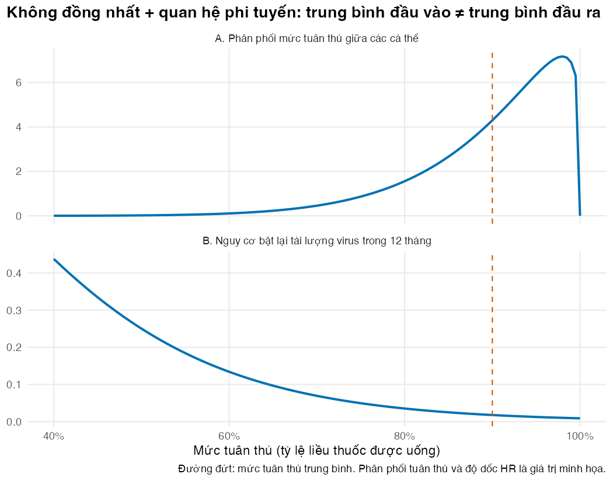
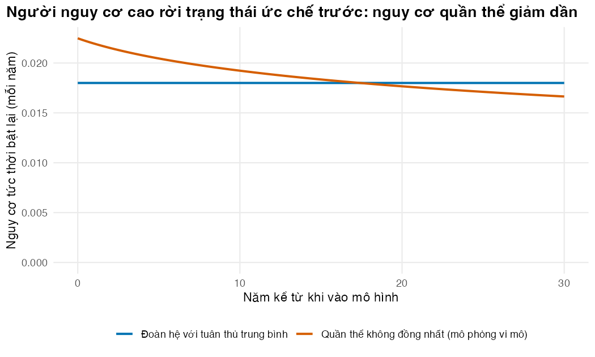
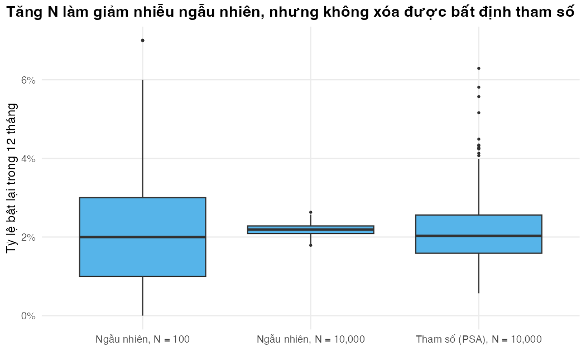

Nhận ra lúc cần mô phỏng từng người, và phân biệt nhiễu ngẫu nhiên với bất định tham số
Vì sao bạn nên quan tâm?
Ở một phòng khám ngoại trú HIV, hai người cùng được ghi “ổn định, lĩnh thuốc 3 tháng một lần”: một người hầu như không quên thuốc, người kia hay quên vào những tuần đi làm xa. Cả nước có 184,214 người đang điều trị ARV, và khoảng 4% chưa ức chế được virus, tức chừng 7,400 người (Báo Lào Cai 2025). Mỗi người trong số đó sẽ cần thêm ít nhất một lần xét nghiệm tải lượng, giá BHYT tại một bệnh viện hạng đặc biệt là 979,700 VNĐ, bằng khoảng 4 ngày lương tối thiểu vùng I (Bộ Y tế 2024; Chính phủ 2025; Quốc hội 2019). Họ không phải “người bệnh trung bình”: nguy cơ dồn vào nhóm tuân thủ kém. Bài này giúp bạn quyết định khi nào mô hình đoàn hệ dùng giá trị trung bình là đủ, và khi nào phải mô phỏng từng người.
Mục tiêu học tập
Sau bài này, bạn có thể:
Nêu ba tình huống làm mô hình Markov đoàn hệ cho kết quả sai hoặc khó dựng: tính không đồng nhất đi kèm quan hệ phi tuyến, phụ thuộc lịch sử, và bùng nổ số trạng thái.
Tính bằng R chênh lệch giữa “nguy cơ của người trung bình” và “nguy cơ trung bình của quần thể”, và giải thích chênh lệch đó bằng bất đẳng thức Jensen.
Giải thích vì sao nguy cơ tức thời của một quần thể không đồng nhất giảm dần theo thời gian dù nguy cơ của từng người không đổi.
Phân biệt bất định ngẫu nhiên (stochastic, bậc một), bất định tham số (parameter, bậc hai), tính không đồng nhất (heterogeneity) và bất định cấu trúc (structural); chỉ ra loại nào giảm khi tăng số cá thể mô phỏng.
Ý chính
Mô phỏng vi mô (microsimulation) là mô hình chuyển trạng thái cấp cá thể: cùng trạng thái, cùng chu kỳ như M02, nhưng mỗi người mang đặc điểm và lịch sử riêng.
Khi kết cục phụ thuộc phi tuyến vào một đặc điểm khác nhau giữa các cá thể, chạy mô hình với giá trị trung bình của đặc điểm đó cho kết quả lệch (bất đẳng thức Jensen).
Người nguy cơ cao rời trạng thái trước, nên nguy cơ quan sát được của quần thể giảm dần. Mô hình đoàn hệ một nhóm không tái tạo được điều này.
Khi “đã thất bại virus học bao lâu” hay “còn mấy tháng tư vấn” ảnh hưởng bước sau, mô hình cần trí nhớ. Mã hóa trí nhớ bằng trạng thái làm số trạng thái nhân lên; mô phỏng vi mô chỉ thêm vài con số cho mỗi người.
Sai số Monte Carlo (Monte Carlo error) giảm theo \(1/\sqrt{N}\); bất định tham số thì không, nên phân tích độ nhạy xác suất (PSA) cần hai vòng lặp lồng nhau (Bài 5).
Mô phỏng vi mô ở đây không mô tả tương tác giữa người với người; khi cần lây truyền, dùng M05.
Nội dung
Từ đoàn hệ sang từng cá thể
Mô hình Markov đoàn hệ ở M02 nhân một vectơ tỷ lệ với ma trận chuyển ở mỗi chu kỳ. Đó là cách tính giá trị kỳ vọng nhanh và minh bạch, với hai giả định ngầm: mọi người trong một trạng thái là như nhau, và xác suất chuyển chỉ phụ thuộc trạng thái hiện tại. Mô phỏng vi mô bỏ hai giả định này. Ta cho từng người đi qua mô hình, mỗi chu kỳ rút số ngẫu nhiên để quyết định người đó chết, chuyển trạng thái hay ở lại, rồi lấy trung bình trên rất nhiều người (Siebert và c.s. 2012; Krijkamp và c.s. 2018). Theo Brennan, Chick, và Davies (2006), đây là mô hình cá thể, ngẫu nhiên, không có tương tác giữa các cá thể.
Ví dụ xuyên suốt là người nhiễm HIV đang điều trị ARV (antiretroviral therapy, ART) bằng phác đồ bậc một (first-line regimen) TLD, xét nghiệm tải lượng 12 tháng một lần theo hướng dẫn quốc gia (Bộ Y tế 2021); xem trang tổng quan. Mức tuân thủ điều trị (adherence) khác nhau giữa người này với người khác, và chính sự khác nhau đó quyết định ai bị thất bại virus học (virological failure: tải lượng virus, viral load, không còn được ức chế, viral suppression), ai xuất hiện kháng thuốc mắc phải (acquired drug resistance), ai phải chuyển phác đồ bậc hai (second-line regimen). Mô hình cá thể có tuân thủ và kháng thuốc như vậy đã được dùng để đánh giá kinh tế các can thiệp HIV ở châu Phi cận Sahara, ví dụ can thiệp theo dõi tuân thủ ARV (Phillips và c.s. 2016).
Lý do 1: không đồng nhất cộng với quan hệ phi tuyến
Trong mô hình, nguy cơ tức thời (hazard) bật lại tải lượng virus của một người có mức tuân thủ \(a\) là
\[
r(a) = r_0 \cdot HR_{10}^{\,10(1-a)},
\]
với \(r_0 =\) 0.009/năm khi tuân thủ 100% và \(HR_{10} =\) 2 cho mỗi 10 điểm phần trăm tuân thủ bị mất. Mức tuân thủ trong quần thể theo phân phối Beta với trung bình 90%. Phân phối tuân thủ và độ dốc \(HR_{10}\) là giá trị minh họa: chưa có số liệu công khai về tỷ lệ liều thuốc được uống của người bệnh Việt Nam. Còn \(r_0\) được chọn để tỷ suất bật lại trung bình của cả quần thể vào khoảng 2.2 trên 100 người-năm, mức quan sát ở người dùng phác đồ có dolutegravir trong một đoàn hệ ở miền Bắc, đã ức chế virus lúc vào đoàn hệ (Matsumoto và c.s. 2025). Quan hệ này cùng chiều với Paterson và c.s. (2000): tuân thủ càng thấp, thất bại virus học càng nhiều. Nghiên cứu đó theo dõi 99 người Mỹ dùng thuốc ức chế protease, nên nó chỉ gợi ý chiều của quan hệ, không cho độ dốc.
Hàm \(r(a)\) lồi theo \(a\). Với một hàm lồi \(f\), bất đẳng thức Jensen cho biết \(\mathbb{E}[f(A)] \ge f(\mathbb{E}[A])\): nguy cơ của “người có tuân thủ trung bình” thấp hơn nguy cơ trung bình thật của quần thể. Mô hình đoàn hệ dùng tuân thủ trung bình sẽ đánh giá thấp số ca thất bại virus học, và sai số càng lớn khi quần thể càng không đồng nhất. Bài này áp dụng Jensen cho nguy cơ 12 tháng \(1 - e^{-r(a)}\). Hàm này chỉ lồi khi \(r(a) < 1\), tức chỉ ở vùng tuân thủ đủ cao; ta sẽ kiểm tra vùng đó rộng đến đâu ở phần Thực hành. Cách vá trong mô hình đoàn hệ là chia vài nhóm tuân thủ và chạy riêng từng nhóm, dùng được khi chỉ có một hai đặc điểm.
Lý do 2: cạn kiệt nhóm nguy cơ cao
Người tuân thủ kém bị bật lại sớm và rời trạng thái “ức chế virus”, nên người còn ở lại ngày càng là người tuân thủ tốt. Nguy cơ tức thời của nhóm còn lại, \(h(t) = \mathbb{E}[r(A)e^{-r(A)t}] / \mathbb{E}[e^{-r(A)t}]\), giảm dần theo thời gian dù nguy cơ của từng người không đổi. Mô hình đoàn hệ một nhóm với tỷ suất cố định cho một đường nằm ngang, sai ở đầu và sai ở cuối.
Lý do 3: phụ thuộc lịch sử và bùng nổ số trạng thái
Giả định Markov cho rằng xác suất chuyển chỉ phụ thuộc trạng thái hiện tại. Trong ví dụ HIV, nhiều quy luật phụ thuộc vào quá khứ:
Số tháng tích lũy sống với virus không ức chế làm tăng nguy cơ tử vong, kể cả sau khi đã ức chế lại.
Kháng thuốc mắc phải chỉ xuất hiện khi đang thất bại virus học trên phác đồ bậc một, và một khi đã có thì không mất đi.
Quy trình xử trí cần một “đồng hồ” riêng cho từng người: xét nghiệm định kỳ, phát hiện tải lượng cao, 3 tháng tư vấn tăng cường tuân thủ, xét nghiệm lại, rồi mới chuyển phác đồ.
Mô hình đoàn hệ có thể mang trí nhớ bằng trạng thái đường hầm (tunnel state), như M02 Bài 4. Nhưng phải đếm cho đúng, vì ba loại thông tin xử lý khác nhau:
Thứ thay đổi trong đường đi của một người và quyết định bước sau (trạng thái sức khỏe, cờ kháng thuốc, các đồng hồ, số tháng thất bại virus học tích lũy) phải thành trạng thái. Số mức của chúng nhân với nhau.
Thuộc tính cố định (nhóm tuân thủ, tuổi khi vào) chia đoàn hệ thành các lớp (strata) chạy riêng. Chúng tăng số lần chạy, không tăng số trạng thái.
Tuổi theo thời gian xử lý bằng mảng chuyển ba chiều, mỗi chu kỳ một ma trận (M02 Bài 4), không phải một chiều của trạng thái.
Đếm như vậy, số trạng thái vẫn rất lớn (con số cụ thể ở phần Thực hành), nhưng ma trận chuyển rất thưa nên máy tính xử lý được. Khó khăn thật là con người phải chỉ định và kiểm tra hàng trăm nghìn xác suất chuyển, và mỗi biến nhớ mới nhân số trạng thái lên một lần nữa, ví dụ cờ “đã từng bị phát hiện thất bại” nhân đôi tất cả. Mô phỏng vi mô giữ cùng thông tin bằng vài con số gắn với mỗi người.
Bốn loại bất định
Báo cáo của nhóm công tác ISPOR-SMDM về ước lượng tham số và phân tích bất định phân biệt bốn khái niệm (Briggs và c.s. 2012); Groot Koerkamp và c.s. (2010) minh họa cách phân tích từng loại trong mô hình quyết định:
Loại
Câu hỏi
Trong mô phỏng vi mô
Bất định ngẫu nhiên (stochastic; còn gọi bậc một, first-order)
Hai người giống hệt nhau có kết cục khác nhau vì may rủi
Tạo ra sai số Monte Carlo; giảm khi tăng số cá thể \(N\)
Bất định tham số (parameter; còn gọi bậc hai, second-order)
Giá trị thật của tham số là bao nhiêu?
Không giảm khi tăng \(N\); lượng hóa bằng phân tích độ nhạy xác suất (PSA)
Tính không đồng nhất (heterogeneity)
Kết cục khác nhau do đặc điểm khác nhau (tuân thủ, tuổi)
Đưa thẳng vào mô hình qua thuộc tính cá thể
Bất định cấu trúc (structural)
Mô hình có đúng hình dạng không?
Phân tích kịch bản; không phải đối tượng của PSA
Nhầm lẫn hay gặp nhất là coi độ phân tán giữa các cá thể mô phỏng là “khoảng tin cậy” của kết quả; đó là bất định ngẫu nhiên. Với quyết định cho cả quần thể, điều quan trọng là bất định tham số, và ta chỉ thấy nó rõ khi nhiễu ngẫu nhiên đủ nhỏ (Bài 5).
Khi nào không nên dùng mô phỏng vi mô
Mô phỏng vi mô chậm hơn, khó kiểm tra hơn và đòi dữ liệu cấp cá thể. Nếu kết cục gần tuyến tính theo đặc điểm, hoặc vài nhóm là đủ, mô hình đoàn hệ phân nhóm minh bạch và rẻ hơn. Nếu điều quan trọng là tương tác giữa người với người, cần mô hình lây truyền động hoặc mô phỏng sự kiện rời rạc (Brennan, Chick, và Davies 2006; Rutter, Zaslavsky, và Feuer 2011).
flowchart TD A{"Kết cục phụ thuộc lịch sử<br/>hoặc đồng hồ riêng của từng người?"} -->|Có| B{"Mã hóa bằng vài trạng thái<br/>đường hầm được không?"} A -->|Không| C{"Không đồng nhất có quan hệ<br/>phi tuyến với kết cục?"} B -->|Được| M["Markov đoàn hệ<br/>có trạng thái đường hầm"] B -->|Không| MS["Mô phỏng vi mô"] C -->|Không| M0["Markov đoàn hệ"] C -->|Có, vài nhóm là đủ| MG["Markov đoàn hệ phân nhóm"] C -->|Có, nhiều đặc điểm liên tục| MS
flowchart TD
A{"Kết cục phụ thuộc lịch sử<br/>hoặc đồng hồ riêng của từng người?"} -->|Có| B{"Mã hóa bằng vài trạng thái<br/>đường hầm được không?"}
A -->|Không| C{"Không đồng nhất có quan hệ<br/>phi tuyến với kết cục?"}
B -->|Được| M["Markov đoàn hệ<br/>có trạng thái đường hầm"]
B -->|Không| MS["Mô phỏng vi mô"]
C -->|Không| M0["Markov đoàn hệ"]
C -->|Có, vài nhóm là đủ| MG["Markov đoàn hệ phân nhóm"]
C -->|Có, nhiều đặc điểm liên tục| MS
Thực hành
Phần đầu nạp các hàm dùng chung, các hàm của mô hình và bảng tham số. Dòng in ra cho biết hai tham số Beta của phân phối tuân thủ, suy từ trung bình và độ tập trung \(\kappa\).
# Vietnamese text in figures needs a UTF-8 locale (Rscript may start in the "C" locale)if (!isTRUE(l10n_info()[["UTF-8"]])) invisible(Sys.setlocale("LC_CTYPE", "en_US.UTF-8"))source("../_shared/R/helpers.R")source("../_shared/R/vn_data.R") # course-wide values: prices, threshold, life tablesource("code/model.R")library(ggplot2)p <-load_hiv_params() # params/hiv.csv + the shared Vietnamese inputsab <-adherence_beta(p)ab
shape1 shape2
10.8 1.2
DEPLETION_YEARS <-30# depletion plot horizon: with low DTG-era rates selection is slow
Đoạn sau tính nguy cơ bật lại trong 12 tháng theo hai cách: cho người có tuân thủ trung bình, và trung bình trên toàn phân phối tuân thủ (tích phân số bằng integrate()). Hãy kiểm tra tỷ số lớn hơn 1, đúng như bất đẳng thức Jensen dự báo. Phần cuối đoạn tìm mức tuân thủ mà dưới đó \(r(a) > 1\) và tính xem bao nhiêu người nằm ở vùng đó.
# 12-month risk of viral rebound on first line, as a function of a person's adherencerisk12 <-function(a) 1-exp(-rebound_rate(a, p$r_reb1, p))# (a) risk of the "average person" (mean adherence) -- what a cohort model would userisk_at_mean <-risk12(p$adh_mean)# (b) average risk over the whole adherence distribution -- what the population experiencesmean_risk <-integrate(function(a) risk12(a) *dbeta(a, ab[["shape1"]], ab[["shape2"]]), 0, 1)$valuejensen_ratio <- mean_risk / risk_at_meanround(c(risk_at_mean = risk_at_mean, mean_risk = mean_risk, ratio = jensen_ratio), 4)
risk_at_mean mean_risk ratio
0.0178 0.0220 1.2312
stopifnot(mean_risk > risk_at_mean) # convex risk curve: averaging inputs underestimates risk# The 12-month risk 1 - exp(-r(a)) is convex only where r(a) < 1 (its second derivative is# proportional to r * (1 - r) * exp(-r)). Where is that, and how many people lie outside it?a_convex <-1-log(1/ p$r_reb1) / (10*log(p$hr_adh10)) # r(a) = 1 at this adherenceshare_not_convex <-pbeta(a_convex, ab[["shape1"]], ab[["shape2"]])round(c(adherence_where_r_equals_1 = a_convex, share_of_people_below = share_not_convex), 4)
stopifnot(share_not_convex <0.01) # text: almost nobody lies in the non-convex region
Người có tuân thủ trung bình có nguy cơ 1.78% trong 12 tháng, còn quần thể có nguy cơ trung bình 2.20%. Nguy cơ thật của quần thể cao hơn 23% so với con số mà mô hình đoàn hệ dùng tuân thủ trung bình đưa ra. Nguy cơ 12 tháng chỉ lồi khi tuân thủ trên khoảng 32%; dưới mức đó chỉ có chưa đến 0.01% quần thể, nên kết luận vẫn đứng vững. Hình dưới cho thấy lý do: đuôi trái của phân phối tuân thủ rơi đúng vào phần dốc của đường nguy cơ.
grid <-seq(0.4, 1, by =0.005)plot_df <-rbind(data.frame(adh = grid, y =dbeta(grid, ab[["shape1"]], ab[["shape2"]]),panel ="A. Phân phối mức tuân thủ giữa các cá thể"),data.frame(adh = grid, y =risk12(grid),panel ="B. Nguy cơ bật lại tải lượng virus trong 12 tháng"))fig_jensen <-ggplot(plot_df, aes(adh, y)) +geom_line(colour = pal_course[1], linewidth =0.9) +geom_vline(xintercept = p$adh_mean, linetype ="dashed", colour = pal_course[2]) +facet_wrap(~panel, ncol =1, scales ="free_y") +scale_x_continuous(labels =function(x) paste0(100* x, "%")) +labs(x ="Mức tuân thủ (tỷ lệ liều thuốc được uống)", y =NULL,title ="Không đồng nhất + quan hệ phi tuyến: trung bình đầu vào ≠ trung bình đầu ra",caption ="Đường đứt: mức tuân thủ trung bình. Phân phối tuân thủ và độ dốc HR là giá trị minh họa.") +theme_course()save_fig(fig_jensen, "l01-jensen.png", width =7, height =5.5)

Phân phối tuân thủ (A, giá trị minh họa) và nguy cơ bật lại 12 tháng theo tuân thủ (B).
Tiếp theo ta tính nguy cơ tức thời của nhóm còn ức chế virus theo thời gian, bỏ qua tử vong để thấy rõ hiệu ứng chọn lọc. Vì tỷ suất bật lại thời dolutegravir thấp, quá trình chọn lọc diễn ra chậm, nên ta nhìn xa 30 năm. Điểm kiểm tra stopifnot() xác nhận nguy cơ quần thể giảm liên tục và cắt đường của mô hình đoàn hệ.
# Hazard of first rebound over time among people still suppressed (ignoring death).# Heterogeneous population: high-risk people fail first, so the population hazard falls.years <-seq(0, DEPLETION_YEARS, by =0.25)rate_a <-function(a) rebound_rate(a, p$r_reb1, p)dens <-function(a) dbeta(a, ab[["shape1"]], ab[["shape2"]])surv_het <-numeric(length(years)); haz_het <-numeric(length(years))for (k inseq_along(years)) { tt <- years[k] surv_het[k] <-integrate(function(a) exp(-rate_a(a) * tt) *dens(a), 0, 1)$value haz_het[k] <-integrate(function(a) rate_a(a) *exp(-rate_a(a) * tt) *dens(a), 0, 1)$value / surv_het[k]}haz_cohort <-rate_a(p$adh_mean)show_years <-c(0, 10, DEPLETION_YEARS)haz_tab <-data.frame(year = show_years, hazard_population = haz_het[match(show_years, years)],hazard_cohort = haz_cohort)round(haz_tab, 4)
year_cross <- years[which(haz_het < haz_cohort)[1]] # first time the population hazard is loweryear_cross
[1] 17.5
stopifnot(all(diff(haz_het) <0)) # depletion of high-risk people: hazard keeps fallingstopifnot(haz_het[1] > haz_cohort, tail(haz_het, 1) < haz_cohort) # the two curves cross
Lúc đầu nguy cơ quần thể là 0.0225/năm, cao hơn mức 0.0180/năm của mô hình đoàn hệ dùng tuân thủ trung bình. Từ khoảng năm thứ 17.5, nguy cơ quần thể xuống dưới mức đó, và sau 30 năm chỉ còn 0.0166/năm. Hai đường cắt nhau: mô hình một nhóm sai theo cả hai chiều tùy thời điểm.
dep_df <-rbind(data.frame(year = years, hazard = haz_het, model ="Quần thể không đồng nhất (mô phỏng vi mô)"),data.frame(year = years, hazard = haz_cohort, model ="Đoàn hệ với tuân thủ trung bình"))fig_dep <-ggplot(dep_df, aes(year, hazard, colour = model)) +geom_line(linewidth =0.9) +scale_colour_manual(values = pal_course[c(1, 2)], name =NULL) +expand_limits(y =0) +labs(x ="Năm kể từ khi vào mô hình", y ="Nguy cơ tức thời bật lại (mỗi năm)",title ="Người nguy cơ cao rời trạng thái ức chế trước: nguy cơ quần thể giảm dần") +theme_course()save_fig(fig_dep, "l01-depletion.png", width =7, height =4.2)

Nguy cơ tức thời bật lại ở nhóm còn ức chế virus.
Bây giờ ta đếm số trạng thái một mô hình đoàn hệ cần để nhớ được những gì mô phỏng vi mô nhớ, theo ba loại thông tin ở trên: bảng memory là các biến nhớ nhân thành trạng thái; strata là thuộc tính cố định thành lớp chạy riêng; tuổi đi vào mảng ba chiều nên không có mặt trong số trạng thái. Điểm kiểm tra so sánh số trạng thái với tích các số mức.
# How big would a cohort model be if it had to remember what the microsimulation remembers?# (a) Things that CHANGE during a person's path and drive the next step: they must become# states, so they multiply.memory <-data.frame(feature =c("Trạng thái sức khỏe (S1, F1, S2, F2, D)", "Kháng thuốc mắc phải (có/không)","Số tháng tư vấn tăng cường còn lại", "Số tháng kể từ lần xét nghiệm trước","Số tháng tích lũy thất bại virus học (0-120, cắt ở 10 năm)"),levels =c(5, 2, p$eac_months +1, p$vl_soc, 121))memory$states <-cumprod(memory$levels)n_states_mem <-tail(memory$states, 1)memory
feature levels states
1 Trạng thái sức khỏe (S1, F1, S2, F2, D) 5 5
2 Kháng thuốc mắc phải (có/không) 2 10
3 Số tháng tư vấn tăng cường còn lại 4 40
4 Số tháng kể từ lần xét nghiệm trước 12 480
5 Số tháng tích lũy thất bại virus học (0-120, cắt ở 10 năm) 121 58080
# (b) Fixed attributes are NOT states: each stratum is a separate cohort runstrata <-data.frame(feature =c("Nhóm tuân thủ", "Nhóm tuổi khi vào mô hình (10 năm)"),levels =c(10, 9))n_runs <-prod(strata$levels)# (c) Age changes with time since entry: one transition matrix per cycle (M02 Lesson 4),# not a state dimension. Each row has at most 4 non-zero cells (stay, die, change# viral state, acquire resistance), because the counters move deterministically.nnz_per_row <-4dense_gb <- n_states_mem^2*8/1e9# dense matrix, 8 bytes per cellsparse_mb <- n_states_mem * nnz_per_row *12/1e6# sparse: 8-byte value + 4-byte indexcells_to_specify <- n_states_mem * nnz_per_row # formulas to write and check# The microsimulation stores 8 numbers per person: state, adherence, age, resistance,# cumulative viraemia, counselling clock, next test month, "ever detected" flagbytes_per_person <-8*8mb_microsim <-1e5* bytes_per_person /1e6# 100,000 peopleround(c(n_states = n_states_mem, n_runs = n_runs, dense_gb = dense_gb, sparse_mb = sparse_mb,cells_to_specify = cells_to_specify, mb_microsim_100k = mb_microsim), 1)
Mô hình đoàn hệ cần 58,080 trạng thái, chạy 90 lần (mỗi nhóm tuân thủ và tuổi vào một lần). Một ma trận chuyển đầy đủ sẽ nặng khoảng 27 GB, nhưng dạng thưa với tối đa 4 ô khác 0 mỗi hàng chỉ khoảng 2.8 MB. Vậy bộ nhớ không phải rào cản; rào cản là phải chỉ định và kiểm tra khoảng 232,320 xác suất chuyển. Mô phỏng vi mô lưu cùng thông tin cho 100,000 người trong khoảng 6.4 MB.
Cuối cùng là bất định ngẫu nhiên và bất định tham số trên cùng một đầu ra: tỷ lệ người bật lại trong 12 tháng. Ta lặp lại nhiều lần với 100 người, với 10,000 người, và với 10,000 người nhưng rút \(r_0\) từ phân phối của nó (một PSA thu nhỏ).
# First-order (stochastic) versus second-order (parameter) uncertainty, on one output:# the share of people with viral rebound within 12 months.share_rebound <-function(n, r_reb1) { a <-rbeta(n, ab[["shape1"]], ab[["shape2"]])mean(runif(n) <1-exp(-rebound_rate(a, r_reb1, p)))}set.seed(2026)reps <-500first_100 <-replicate(reps, share_rebound(100, p$r_reb1))first_10k <-replicate(reps, share_rebound(10000, p$r_reb1))dp <-dist_params(attr(p, "table"))g <- dp[dp$name =="r_reb1", ]r_draws <-rgamma(reps, shape = g$p1, scale = g$p2)second_10k <-sapply(r_draws, function(r) share_rebound(10000, r))unc_tab <-data.frame(source =c("Ngẫu nhiên, N = 100", "Ngẫu nhiên, N = 10,000", "Tham số (PSA), N = 10,000"),mean =c(mean(first_100), mean(first_10k), mean(second_10k)),sd =c(sd(first_100), sd(first_10k), sd(second_10k)))unc_tab$mean <-round(unc_tab$mean, 4); unc_tab$sd <-round(unc_tab$sd, 4)unc_tab
source mean sd
1 Ngẫu nhiên, N = 100 0.0215 0.0142
2 Ngẫu nhiên, N = 10,000 0.0219 0.0015
3 Tham số (PSA), N = 10,000 0.0214 0.0082
# The third box mixes both sources: Var(total) = Var(parameter) + Var(noise at N = 10,000).# Subtracting the noise variance leaves the parameter part alone (Lesson 5 does this for a PSA).sd_param_only <-sqrt(max(var(second_10k) -var(first_10k), 0))round(c(sd_total =sd(second_10k), sd_noise_only =sd(first_10k), sd_param_only = sd_param_only), 4)
sd_ratio_first <-sd(first_100) /sd(first_10k) # theory: sqrt(10000 / 100) = 10stopifnot(sd_ratio_first >7, sd_ratio_first <13)# Text: the parameter part is real and larger than the noise at N = 10,000 (Exercise 3)stopifnot(sd_param_only >sd(first_10k))
Qua 500 lần lặp, tăng từ 100 lên 10,000 người làm độ lệch chuẩn giảm 9.5 lần, gần đúng \(\sqrt{100}\) theo lý thuyết. Hộp thứ ba có độ lệch chuẩn 0.82%, gồm cả nhiễu của 10,000 người lẫn bất định của \(r_0\). Trừ phương sai nhiễu đi, riêng phần do tham số là 0.81%. Phần này nằm ở tham số, không ở số người mô phỏng; Bài 5 làm phép trừ này cho một PSA thật.
unc_df <-data.frame(value =c(first_100, first_10k, second_10k),source =factor(rep(unc_tab$source, each = reps), levels = unc_tab$source))fig_unc <-ggplot(unc_df, aes(source, value)) +geom_boxplot(fill = pal_course[5], outlier.size =0.6) +scale_y_continuous(labels =function(x) paste0(100* x, "%")) +labs(x =NULL, y ="Tỷ lệ bật lại trong 12 tháng",title ="Tăng N làm giảm nhiễu ngẫu nhiên, nhưng không xóa được bất định tham số") +theme_course()save_fig(fig_unc, "l01-uncertainty.png", width =7, height =4.2)

Bất định ngẫu nhiên giảm khi tăng N; bất định tham số thì không.
Mẹo thực hành
Trước khi viết mô phỏng vi mô, hãy viết ra danh sách “những gì mô hình phải nhớ” về mỗi người. Nếu danh sách chỉ có một hai mục rời rạc, thử mô hình đoàn hệ phân nhóm hoặc có trạng thái đường hầm trước.
Kiểm tra độ cong của các quan hệ quan trọng như trong hình B: đường gần thẳng thì giá trị trung bình dùng được.
Lỗi thường gặp
Chạy mô hình đoàn hệ với đặc điểm trung bình khi kết cục phi tuyến theo đặc điểm đó. Cách phát hiện: tính kết cục cho vài nhóm rồi so trung bình có trọng số với kết quả dùng giá trị trung bình.
Báo cáo độ phân tán giữa các cá thể như khoảng bất định của quyết định. Đó là bất định ngẫu nhiên.
Đưa tính không đồng nhất vào PSA, ví dụ rút ngẫu nhiên tuổi của cả đoàn hệ. Tuổi là thuộc tính cá thể, không phải phân phối của tham số.
Nhân cả thuộc tính cố định vào số trạng thái để “chứng minh” mô hình đoàn hệ không dựng nổi. Thuộc tính cố định là lớp chạy riêng, tuổi là chiều thời gian.
Bài tập
(Dễ) Tăng độ tập trung của phân phối tuân thủ lên \(\kappa = 50\), tức quần thể đồng nhất hơn. Tỷ số giữa nguy cơ trung bình của quần thể và nguy cơ của người trung bình thay đổi thế nào?
(Vừa) Một nhóm đề xuất mô hình đoàn hệ “gọn hơn”: chỉ nhớ tối đa 24 tháng thất bại virus học, 3 nhóm tuân thủ, tuổi theo nhóm 10 năm. Mô hình này cần bao nhiêu trạng thái và bao nhiêu lần chạy? Bạn có muốn tự kiểm tra các ma trận chuyển của nó không?
(Khó) Dựa vào bảng bất định ở trên, giải thích vì sao tăng số cá thể lên vô hạn vẫn không làm hẹp được khoảng bất định của quyết định. Tính tỷ số giữa độ lệch chuẩn do tham số riêng và độ lệch chuẩn do nhiễu khi \(N\) = 10,000.
Lời giải
Bài 1. Quần thể càng đồng nhất thì giá trị trung bình càng gần đúng; tỷ số tiến về 1.
# Exercise 1: less heterogeneity (kappa = 50) shrinks the gap between (a) and (b)p_ex <- pp_ex$adh_kappa <-50ab_ex <-adherence_beta(p_ex)mean_risk_ex <-integrate(function(a) risk12(a) *dbeta(a, ab_ex[["shape1"]], ab_ex[["shape2"]]),0, 1)$valueround(c(ratio_kappa12 = jensen_ratio, ratio_kappa50 = mean_risk_ex / risk_at_mean), 3)
ratio_kappa12 ratio_kappa50
1.231 1.045
Bài 2. Nhân số mức của các biến nhớ để ra số trạng thái; nhân số nhóm của thuộc tính cố định để ra số lần chạy:
# Exercise 2: a leaner cohort model (viraemia memory capped at 24 months, 3 adherence groups,# age in 10-year bands). Memory dimensions -> states; fixed attributes -> separate runs.lean_memory <-c(health =5, resistance =2, eac = p$eac_months +1, since_test = p$vl_soc,cum_vir =25)lean_runs <-3*9c(states =prod(lean_memory), runs = lean_runs)
states runs
12000 27
Vẫn cần 12,000 trạng thái và 27 lần chạy. Mỗi trạng thái là một hàng trong ma trận chuyển, nên kiểm tra bằng tay là không khả thi.
Bài 3. Tăng \(N\) chỉ làm giảm nhiễu ngẫu nhiên theo \(1/\sqrt{N}\). Phần bất định đến từ tham số giữ nguyên dù \(N\) lớn đến đâu. Với 10,000 người, độ lệch chuẩn do tham số riêng gấp khoảng 5.4 lần độ lệch chuẩn do nhiễu.
# Exercise 3: first-order spread falls with 1 / sqrt(N); parameter spread does notround(c(sd_ratio_first = sd_ratio_first, theory =sqrt(10000/100),sd_param_vs_noise = sd_param_only /sd(first_10k)), 2)
sd_ratio_first theory sd_param_vs_noise
9.47 10.00 5.39
Brennan, Alan, Stephen E. Chick, và Ruth Davies. 2006. “A taxonomy of model structures for economic evaluation of health technologies”. Health Economics 15 (12): 1295–1310. https://doi.org/10.1002/hec.1148.
Briggs, Andrew H., Milton C. Weinstein, Elisabeth A. L. Fenwick, Jonathan Karnon, Mark J. Sculpher, và A. David Paltiel. 2012. “Model parameter estimation and uncertainty analysis: a report of the ISPOR-SMDM Modeling Good Research Practices Task Force Working Group-6”. Medical Decision Making 32 (5): 722–32. https://doi.org/10.1177/0272989X12458348.
Groot Koerkamp, Bas, Milton C. Weinstein, Theo Stijnen, M. H. Heijenbrok-Kal, và M. G. Myriam Hunink. 2010. “Uncertainty and patient heterogeneity in medical decision models”. Medical Decision Making 30 (2): 194–205. https://doi.org/10.1177/0272989X09342277.
Krijkamp, Eline M., Fernando Alarid-Escudero, Eva A. Enns, Hawre J. Jalal, M. G. Myriam Hunink, và Petros Pechlivanoglou. 2018. “Microsimulation modeling for health decision sciences using R: a tutorial”. Medical Decision Making 38 (3): 400–422. https://doi.org/10.1177/0272989X18754513.
Matsumoto, Shoko, Moeko Nagai, Linh Khanh Tran, Tsunefusa Hayashida, Hoai Dung Thi Nguyen, Truong Manh Nguyen, Giang Van Tran, và c.s. 2025. “Virological outcomes and treatment retention in North Vietnam amidst transition to social insurance-based HIV services and dolutegravir-based regimens”. Scientific Reports 15 (1): 42657. https://doi.org/10.1038/s41598-025-26866-5.
Paterson, D. L., S. Swindells, J. Mohr, M. Brester, E. N. Vergis, C. Squier, M. M. Wagener, và N. Singh. 2000. “Adherence to protease inhibitor therapy and outcomes in patients with HIV infection”. Annals of Internal Medicine 133 (1): 21–30. https://doi.org/10.7326/0003-4819-133-1-200007040-00004.
Phillips, Andrew N., Valentina Cambiano, Fumiyo Nakagawa, Loveleen Bansi-Matharu, Papa Salif Sow, Peter Ehrenkranz, Deborah Ford, và c.s. 2016. “Cost effectiveness of potential ART adherence monitoring interventions in Sub-Saharan Africa”. PLoS ONE 11 (12): e0167654. https://doi.org/10.1371/journal.pone.0167654.
Rutter, Carolyn M., Alan M. Zaslavsky, và Eric J. Feuer. 2011. “Dynamic microsimulation models for health outcomes: a review”. Medical Decision Making 31 (1): 10–18. https://doi.org/10.1177/0272989X10369005.
Siebert, Uwe, Oguzhan Alagoz, Ahmed M. Bayoumi, Beate Jahn, Douglas K. Owens, David J. Cohen, và Karen M. Kuntz. 2012. “State-transition modeling: a report of the ISPOR-SMDM Modeling Good Research Practices Task Force-3”. Medical Decision Making 32 (5): 690–700. https://doi.org/10.1177/0272989X12455463.
Kịch bản video (~12 phút)
#
Slide
Lời giảng chính
Hình/Code
1
Câu hỏi mở đầu
Hai người cùng “ổn định, lĩnh thuốc 3 tháng” có cùng nguy cơ không? Mô hình đoàn hệ trả lời: có
Khung “Vì sao bạn nên quan tâm?”, sơ đồ mô hình
2
Mô phỏng vi mô là gì
Cùng trạng thái, cùng chu kỳ; mô phỏng từng người; lấy trung bình trên nhiều người
Bảng so sánh đoàn hệ và cá thể
3
Jensen
Hàm nguy cơ lồi; người trung bình ≠ quần thể trung bình; con số từ R
figs/l01-jensen.png, chunk l01-jensen
4
Cạn kiệt nhóm nguy cơ cao
Người tuân thủ kém rời trạng thái trước; nguy cơ quần thể giảm; hai đường cắt nhau
figs/l01-depletion.png
5
Giả định Markov
Ba thứ mô hình HIV phải nhớ: thời gian thất bại virus học tích lũy, cờ kháng thuốc, đồng hồ xử trí
Danh sách “trí nhớ”
6
Bùng nổ số trạng thái
Biến nhớ nhân thành trạng thái; thuộc tính cố định thành lớp; tuổi thành mảng ba chiều; khó khăn là chỉ định và kiểm tra
Bảng memory, chunk l01-explosion
7
Bốn loại bất định
Ngẫu nhiên, tham số, không đồng nhất, cấu trúc; loại nào giảm khi tăng N
Bảng bốn loại bất định
8
Bằng chứng mô phỏng
N nhỏ, N lớn, PSA: hộp nào co lại, hộp nào không
figs/l01-uncertainty.png
9
Khi nào không dùng
Gần tuyến tính, vài nhóm là đủ, cần tương tác giữa người với người